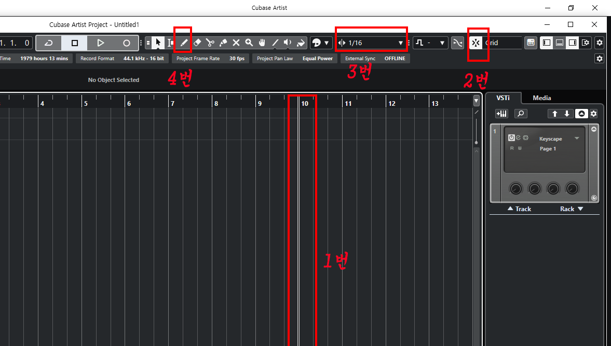
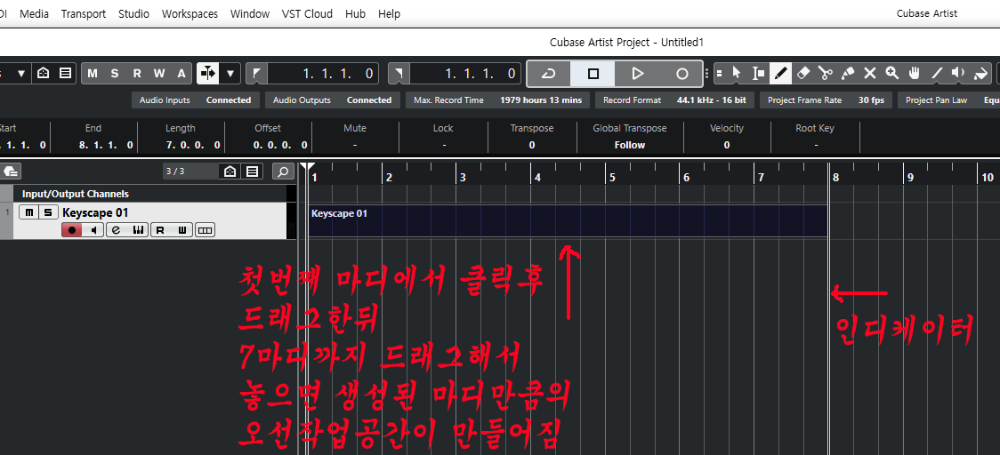
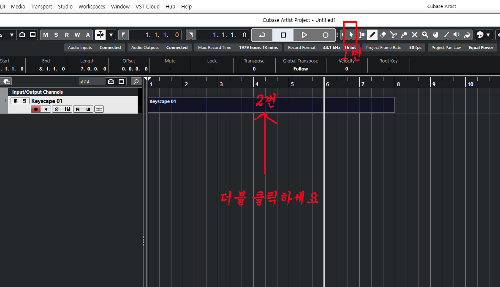
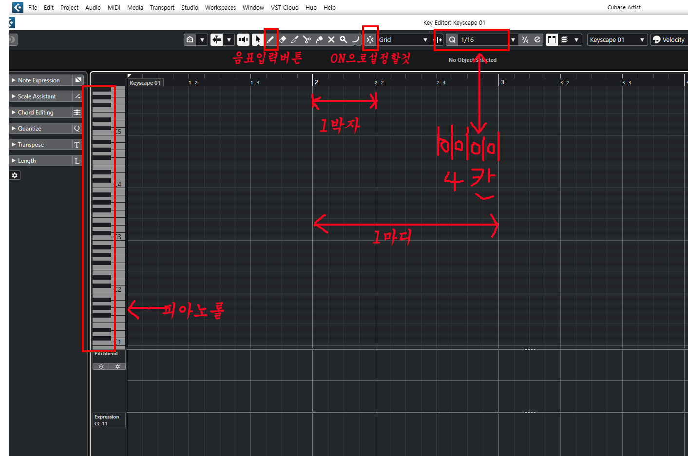
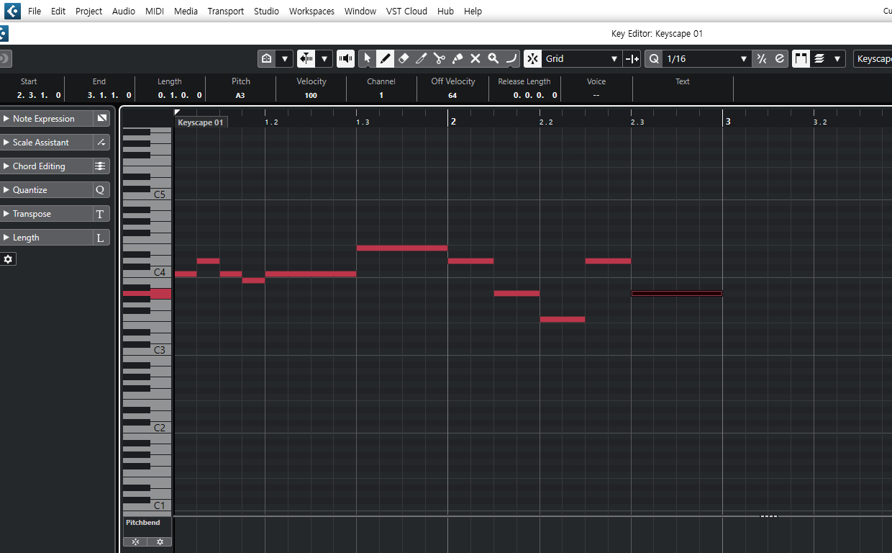
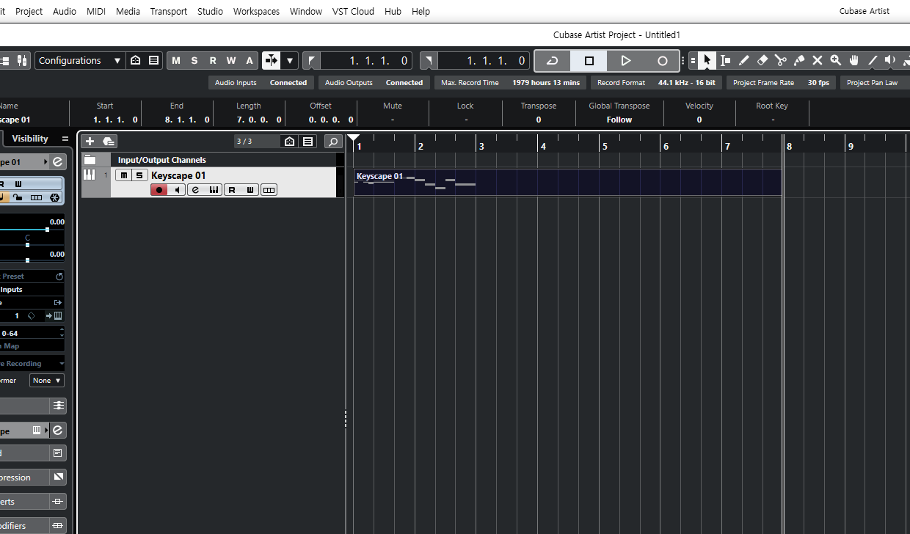

다르게 보일것입니다.이것이 인디케이터 줄이라고 흔히 표현합니다.
곡이 진행되어 가는 마디를 가리켜주는 표시줄이라고 생각하면 됩니다.
그래서 1번의 인디케이터 줄을 첫마디에 옮겨 두어야 되겠죠.
그러기 위해서는 키보드의 가장 우측 하단에 보시면
점하나 찍혀있고 DEL 이라고 쓰여진 버튼을 클릭합니다.
인디케이터 줄이 첫마디로 위치 되어 진걸 확인 할수 있습니다.
그리고 2번의 빨간색 테두리는 스냅버튼이라고 합니다.
이것은 클릭할때마다 색깔이 바뀝니다.
ON 으로 활성화 되어 있으면 음정을 입력할때 박자에 딱 맞게 저절로
입력이 되게끔 하고, OFF 로 활성화 되어 있으면 음정을 입력할때
정박자에 입력이 되지 않고 애매한 박자에 걸쳐지게 됩니다.
당분간 기초공부를 위해서는 ON으로 활성화 해놓은 상태로
배워 나가기를 바랍니다. 그리고 3번의 빨간색 테두리는 내가 입력할 최소의 음정길이단위를
설정해주는 곳입니다.그림상에는 16분음표가 설정되어 있네요.
그것은 내가 최소단위로 16분음표를 찍어 음정을 입력하겠다는 뜻입니다.
만약에 내가 입력할 곡의 가장 짧은 음정의 단위가 8분음표라면
세모를 클릭하시면 나오는 단위들중에 8분음표를 선택하시면 됩니다.
그리고 다음 4번의 빨간색 테두리는 Draw 버튼입니다.
이버튼은 선택한뒤에 트랙의 우측빈곳을 클릭후 원하는 마디수만큼 드래그하여
놓으면 음정을 입력할수 있는 새로운 오선지가 만들어진다고 보시면 됩니다.
버튼 4번의 상세이미지는 아래 이미지를 참고 하세요.


[상단이미지 설명 ]
그러기위해서는 우선 위그림에서 1번의 메뉴버튼을 클릭합니다.
이 버튼은 가장 많이 사용되어 지는 버튼이니까 잘 기억하세요.
이버튼은 선택버튼입니다.흔히 오브젝트 셀렉트 버튼이죠.
워낙 많이 사용되는 버튼이니까 단축키로 기억하세요.단축키는 번호로 1번 입니다.
그림처럼 1번을 선택한뒤 2번을 더블클릭하세요. 그러면 다음 아래쪽 이미지처럼 새로운 작업창이 열립니다(아래쪽 이미지 참조).

위쪽 이미지에서 보고 설명을 참고하세요.
위에서 클릭해야 할부분은 연필모양의 음표입력버튼
원래의 설정값으로는 8번숫자가 단축키입니다.
그리고 선택해야 할 곳은 ON 으로 설정해야할 스냅버튼입니다.
나머지는 그냥 설명만 참고 하세요.
두가지 선택을 했다면 아래쪽 다음 이미지처럼
연필툴을 사용해서 마음대로 아무거나 클릭해서
음정을 찍어봅시다.

위쪽 이미지처럼 그냥 빈칸에 클릭한번 하면
자동으로 음표가 C4음자리에 16분음표 길이만큼 찍혀있는것이 보일겁니다.
이미지에서는 16분음표 4개가 찍혀서 1박자를 이루고 있습니다.
그리고는 C4 음정에 한박자 짜리 음정이 찍혀 있습니다.
그 뒤에도 E4음정이 한박자 짜리로 찍혀있습니다
그 뒤에는 반박자짜리 음정이 4개 찍혀있습니다.
그리고 한박자짜리 음정이 찍혀있습니다.
마우스를 한번 클릭하면 최소 음정길이 16분음표가 찍혀지고
마우스를 클릭한 상태에서 원하는 길이만큼 드래그 하면
원하는 길이만큼의 음정이 찍혀집니다.
그렇게 나머지 음정들도 원하는대로 찍으시면 됩니다.
음정을 다 찍으셨다면 인디케이터를 처음 마디로 보냅니다.(키보다 우측하단의 점 버튼)
그리고 스페이스바(play) 를 눌러 플레이 시켜서 들어봅니다.
멈춤을 할때도 스페이스바를 누르시면 됩니다.
이미지처럼 저와 똑같이 한번 입력해보세요.
입력이 끝나고 플레이 해봐서 마음에 들었다면
현재의 작업창을 닫고 나오시면 아래의 이미지처럼
트랙에 작업된 부분이 나타나게 됩니다(아래쪽 이미지참조).

초보자라면 여기까지 강좌를 보아도 궁금한점이 많으실겁니다.
궁금한점은 언제든지 질문하세요.직접 오프라인 강좌를 한다면,
파생되는 여러가지들의 버튼들도 함께 곁들여 살명이 가능하지만
온라인으로 교재를 만들다보니 분량의 한계때문에 그러지 못한점 있습니다.
양해하시고 언제든지 궁금한점은 질문하시기 바랍니다.